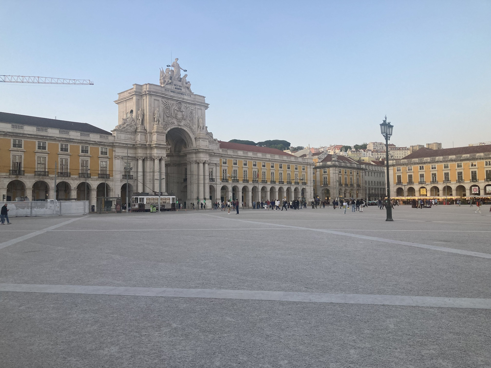
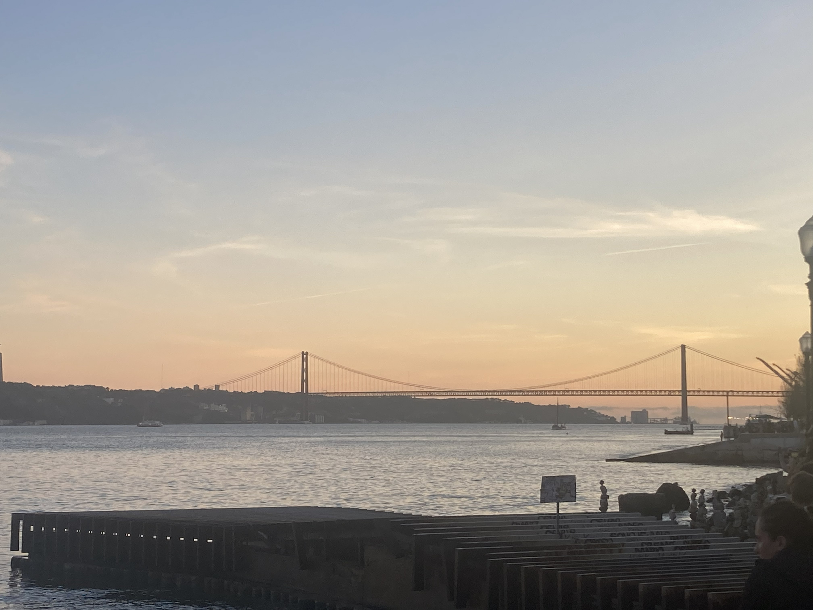
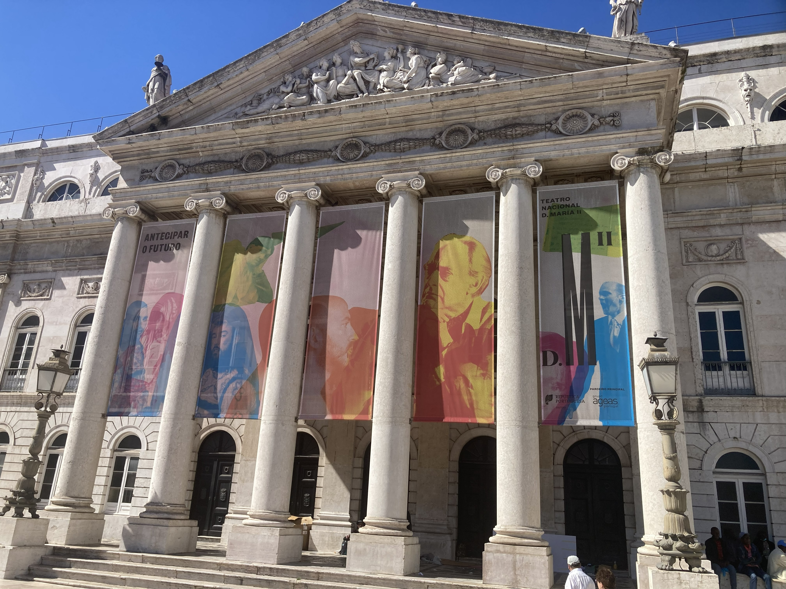
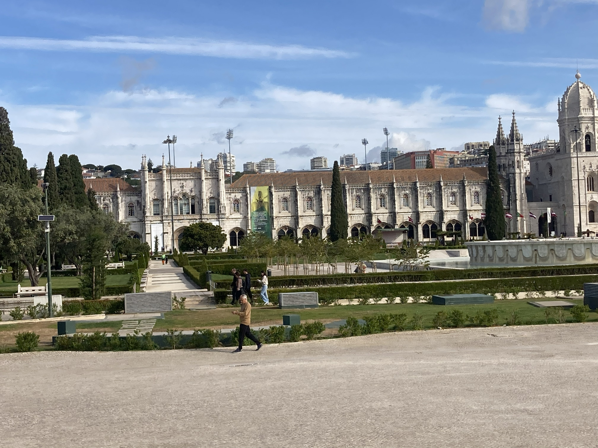
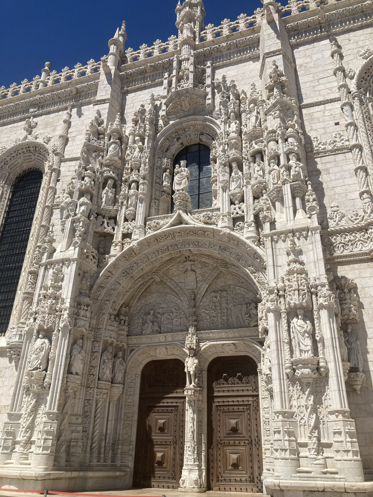
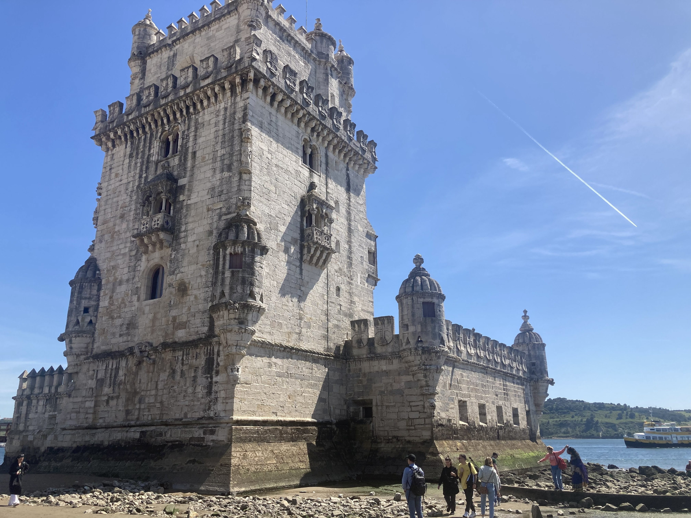
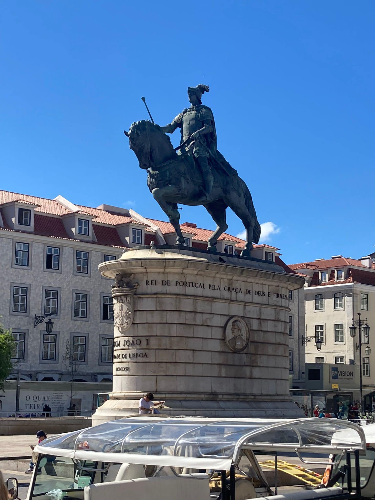

Lisbon completely won us over. A city full of stunning monuments, beautiful viewpoints, incredible food and more character than you can take in on one visit. Yes, there are a lot of hills — but that is part of the charm. We did the hop-on hop-off bus, explored Belém, headed out to the fairytale town of Sintra, discovered the gorgeous coastal village of Colares and finished with a lovely stop in Cascais. Portugal at its absolute best.
What this trip gave us:
The story
We visited Lisbon in 2023 and it immediately jumped to the top of our European city break list. The city has a brilliantly lived-in feel — grand squares and monasteries sitting alongside tiny neighbourhood cafés, colourful tiled buildings and trams rattling up impossibly steep streets.
The hop-on hop-off bus was genuinely one of the best decisions we made. Given how hilly Lisbon is, it takes the hard work out of getting between the main sights and gives you a great overview of the city before you decide where to spend more time. Highly recommend it as a starting point.
Belém was a highlight — the Jerónimos Monastery is extraordinary, the Tower of Belém is iconic, and while you're there you are legally required to stop for a pastel de nata at the original Pastéis de Belém. Non-negotiable.
The gluten-free options in Lisbon were genuinely impressive too — Portuguese cuisine lends itself well to GF eating and we never struggled to find something brilliant on the menu.
And the day trips — Sintra, Colares and Cascais — added a completely different dimension to the trip. Each one felt like its own world, and all three are easy to reach from the city.
The best way to tackle Lisbon's hills and get your bearings. Hits all the major sights and saves your legs for the parts that really matter.
One of the most stunning buildings we have ever seen — the Manueline architecture is jaw-dropping inside and out. An absolute must in Belém.
Fairytale palaces perched on forested hillsides — Sintra is unlike anywhere else in Europe and a brilliant day trip from Lisbon.
A gorgeous, quiet village near Sintra that most visitors skip entirely. Charming streets, lovely atmosphere and well worth including in a day out.
A beautiful coastal town with a relaxed, easy vibe — great seafood, lovely beaches and a completely different feel to the busy city.
Fresh seafood, grilled meats, incredible pastries and great gluten-free options throughout. Lisbon is a seriously good food city.
From the grand squares and monastery cloisters to the tower and the streets — a glimpse of what makes Lisbon so special.







Want to explore Lisbon and Portugal with everything taken care of? TourRadar has a great range of Portugal tours to suit every style of trip.
Whether you want a city-focused break or a wider Portugal tour that takes in Lisbon, Sintra, the Algarve and beyond — having the route and logistics sorted means you can focus on actually enjoying it. Lisbon is a city that rewards proper time and attention, and a guided tour is a brilliant way to make sure you don't miss anything.
Disclosure: This is an affiliate link. If you book through it we may earn a small commission at no extra cost to you.
Things to do in Lisbon
The hop-on hop-off bus is our top pick — but there is plenty more to explore. Browse Lisbon activities, tours and experiences here:
Disclosure: If you book through these links we may earn a small commission at no extra cost to you.
The must-do day trip
If you are visiting Lisbon and you do not make it to Sintra, you are missing one of the most extraordinary places in all of Portugal. Just 40 minutes by train from the city, Sintra feels like stepping into a completely different world — colourful palaces perched on misty hilltops, lush gardens and winding cobbled streets full of pastry shops and palace views.
The Pena Palace is the iconic one — vivid, dramatic and unlike anything else you will have seen. But even just wandering the town itself and taking in the atmosphere is worth the trip out. Give yourself a full day here — you will want it.
Disclosure: If you book through these links we may earn a small commission at no extra cost to you.
The lovely coastal town
Cascais is one of those places that just feels right the moment you arrive. A short train ride along the coast from Lisbon, it has a completely different pace — relaxed, pretty and full of great seafood restaurants, lovely beaches and a charming old town centre that is perfect for an afternoon wander.
It works brilliantly as a half day or a full day out from Lisbon — you can even combine it with a stop in Estoril on the way. A lovely way to end a trip to the Lisbon area.
Disclosure: If you book through these links we may earn a small commission at no extra cost to you.
Common questions
What to pack for Lisbon
Lisbon is walkable but hilly — comfortable shoes are non-negotiable. It is warm and sunny for much of the year but can be cooler in winter and spring. These are the things we'd pack without hesitation.
Lisbon's hills and cobbled streets will test your footwear. Comfortable, supportive shoes are the single most important thing you can pack — your feet will thank you.
View on Amazon →Portugal gets serious sunshine — especially from spring onwards. High SPF is essential for long days out exploring, on the hop-on hop-off bus or day tripping to Sintra and Cascais.
View on Amazon →Perfect for day trips to Sintra and Cascais — light enough to carry all day without getting in the way, with room for a water bottle, camera and a layer.
View on Amazon →You will get through a lot of water walking around Lisbon in the heat. A reusable bottle saves money and keeps you hydrated on long days out.
View on Amazon →Full days out sightseeing, using maps and taking photos will drain your battery fast. A power bank means you never miss a moment or get lost.
View on Amazon →Handy for maps, bookings and staying connected without relying on hotel Wi-Fi or paying roaming charges — especially useful on day trips outside the city.
View on Amazon →Portugal uses Type F plugs — different to Ireland. Don't arrive on day one with nothing charged after your flight.
View on Amazon →Breathable and cool for warm Lisbon days — and smart enough for dinner out in the evening. Perfect for the heat without looking too casual.
View on Amazon →Lisbon can be breezy, especially along the waterfront and in the evenings. A light jacket is worth having even in summer — and essential in spring or autumn.
View on Amazon →Disclosure: These are Amazon affiliate links. If you buy through them we may earn a small commission at no extra cost to you. These are all things we'd genuinely pack for a Lisbon trip.
Lisbon is one of Europe's great city break destinations — and with Sintra, Colares and Cascais on the doorstep, it punches well above its weight. Book a tour that handles the logistics and just enjoy one of our favourite cities in Europe.
Affiliate disclosure: if you book through our links we may earn a small commission at no cost to you. We only recommend trips and experiences we'd be happy to stand over.